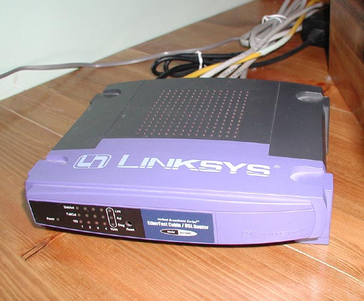

A hálózati útválasztó olyan hálózati eszköz, amely a számítógép-hálózatok között az adatcsomag-továbbítást végzi.
Eképpen egy router legalább két hálózathoz kapcsolódik legalább egy-egy összeköttetésen keresztül.
Amikor a valamelyik összeköttetésén keresztül egy csomag érkezik, az útválasztó kiolvassa a csomag fejlécéből a csomag végső célpontjának hálózati rétegbeli címét, majd a saját útválasztó táblája vagy szabályrendszere szerint továbbítja a csomagot a megfelelő másik összeköttetésén.
A fenti leírásból következik, hogy az útválasztók a 3., vagyis a hálózati rétegben működnek.
A számítógépes hálózatok forgalma különböző típusú adatcsomagokban zajlik.
Ezen csomagok utaznak a feladótól a címzettig, akár több eszközön is keresztül, például az internet esetében.
Útjuk során minden érintett eszköznek ismernie kell, hogy merre továbbítsa a fogadott csomagot, hogy az eljusson a címzettig, és döntéseket kell hoznia, amennyiben például több útvonal is ismert.
A routerek végzik ezen csomagok megfelelő irányba való továbbítását, és végzik ezen döntéseket. A mai routerek nagy része az IP protokoll-alapú hálózatok forgalmát irányítják, de több más protokoll kezelésére is alkalmasak lehetnek.
IP protokoll esetén egymás és a hálózatok azonosítására a harmadik rétegbeli IP-címet alkalmazzák.
Egy Linksys router
Az internetre csatlakozást mindig valamilyen szolgáltatón keresztül lehet megvalósítani. A szolgáltatók által üzemeltetett hálózatokat és a szolgáltatókat magukat is routerek kötik össze, általában ezeket a hálózatokat nevezhetjük az internet gerincének.
A cégek és vállalkozások mai alapvető követelménye, hogy az internetre csatlakozzanak. Ehhez is routereket használnak, azonban nagyobb vállalatok esetében szükséges lehet a hálózat tagolása, akár logikailag adminisztratív szempontból, akár fizikailag elhatárolódott, országos vagy akár kontinens méretű kiterjedés esetén. Ebben az esetben a külön egységek külön helyi hálózatokkal (LAN) rendelkeznek, melyeket routerekkel lehet összekötni, így lehetővé téve a kommunikációt közöttük.
Kisebb cégek illetve otthoni felhasználók Internetre való csatlakozásához használatosak ezen routerek, melyek teljesítménye is ennek megfelelően jóval kisebb. Alapvető feladatuk a belső, saját hálózat Internetre való csatlakoztatása. Egy 2013-as vizsgálat szerint a SOHO routerek nagy részének biztonsága hagy kívánnivalót maga után. A helyi hálózat felől mind a 13 vizsgált készülék feltörhető volt.